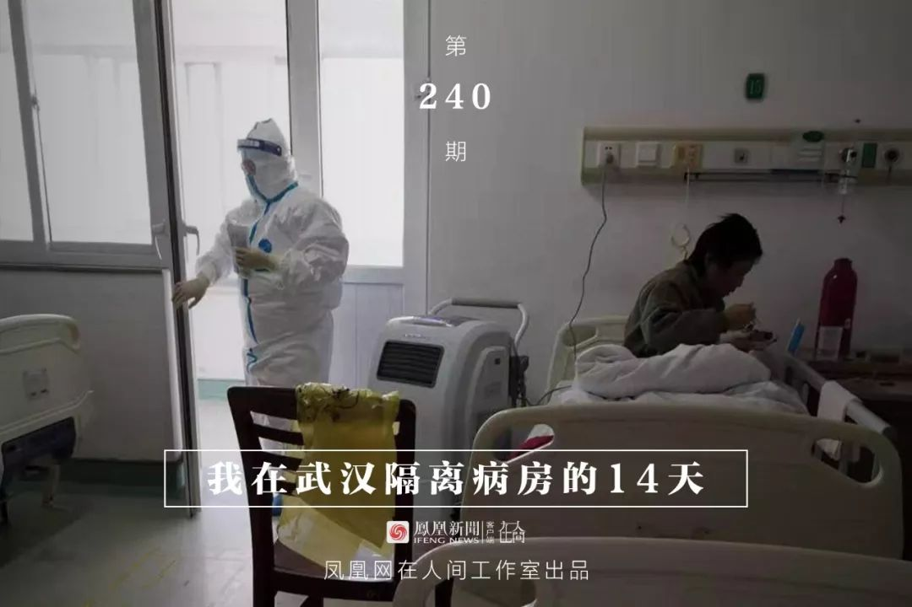
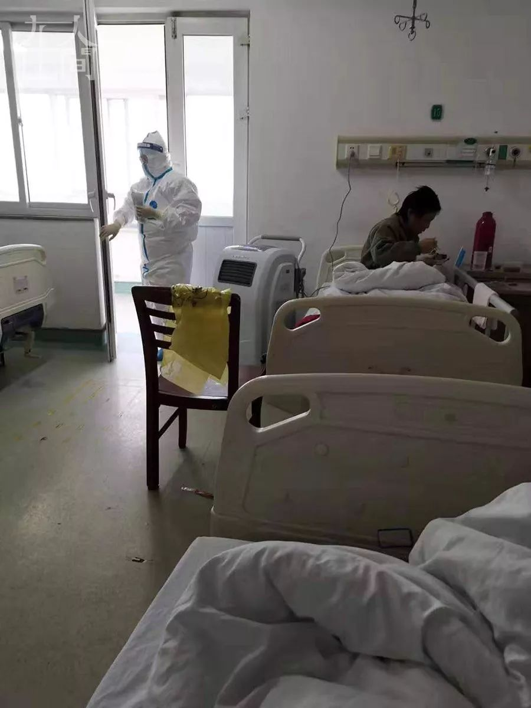
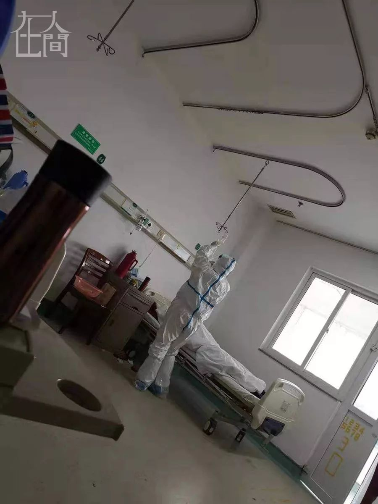

东北人在武汉：没了温泉、聚餐 一菜一饭也能好好过年 - 经济观察网 － 专业财经新闻网站
原文链接 备份链接 郭锦宜/文 娜娜是我十多年前第一次创业时隔壁公司的小姑娘，后来去武汉工作了，她在长春的婚礼答谢宴我也受邀参加了。小两口2019年在武汉买了房子，成为新武汉人。 娜娜说今年是他们在武汉过的第一个春节，因为这边有个说法是新 …


凤凰新闻客户端 凤凰网在人间工作室出品
武汉的朱红一家，在过去的一个月里，经历了生离死别。身体一向很好的公公，从高烧到意外离世，只有7天。
葬礼结束的当天下午，片刻不敢耽误，朱红、婆婆、小姑子（老公的妹妹）马上到医院做了检查。几天前她和婆婆就开始咳嗽，随着新型冠状病毒肺炎疫情的不断加重，她心底的怀疑、不安也日渐加重。到了医院，CT、查血，一切结果都显示，三人极有可能都受到了感染。刚刚痛失亲人的她们，不得不开始了新的“战斗”。
1月19号，朱红被协和医院收治。住院期间，朱红老公给他出主意，把在病房里拍的视频发在快手平台上。很快，就有人过来给她加油，还有越来越多的患者、家属过来问她，吃什么药，怎么治疗的，需要注意什么？慢慢地，朱红觉得“自己有义务说些什么”。

■ 金银潭医院病房前长长的走廊，拍于2月1日出院。
2月1号，朱红出院了。婆婆和小姑子的病情也在逐渐好转。走出医院大楼的那一刻，朱红不由自主地拿出手机，对着摄像头情不自禁地喊道：重见天日的感觉，真好！
以下是朱红的讲述：
一
我公公今年67岁，他的身体一向很好，也没有老年人常见的那些慢性病。1月初的时候，他开始轻微地咳嗽，不发烧，到社区医院诊断说是普通感冒，打几天头孢，就好了。
9号那天，公公突然开始发烧，到晚上有点严重，我们立刻去武钢医院看急诊。查血的结果还好，但是CT显示双肺感染，有斑片状和磨玻璃影，就是现在很明显的那个症状。但他没有接触史，我们和华南海鲜市场是不同的区域，那个在汉口，我们在青山区。他平时也不去菜市场买菜，所以压根儿就不会往那方面想。
12号，呼吸科主任来查房，当时就说很严重，肝脏、肾脏、心脏都已经出现异常。我婆婆问主任，这到底是什么病啊？主任说，是病毒性肺炎。他让我婆婆赶快通知家属，准备告病危。
这时我已经发烧4天了，有两天39度多。在医院开的口服奥司他韦，吃完温度降下来了，就以为是普通的感冒。接到婆婆的电话，我赶紧往医院跑。那时我老公还在外地出差，只能靠我到处联系。
到了武钢医院，主任让我们马上往大医院转，他说现在只是刚刚开始，到高峰期还有几天的样子。最好尽快转到同济、协和、中南或者金银潭去。事后我们才知道，当时在武钢医院呼吸科里，我公公是最严重的一个。但是因为各种原因，没有转出去。
经过协商，武钢医院12号当晚把我公公转到了ICU病房，这样病人能得到更好的护理。但是转进去之后，我们就相当于跟病人隔离开来了，只有每天下午4点多，通过视频可以看一下他。那时他状态还好，还可以把氧管拿掉，起来坐一会儿。
一直到14号我老公赶到医院，公公的精神状况都还可以，护士说，他精神好一点了，还可以坐起来，把脚吊在床边。
17号一早，医院通知我老公，说公公有轻生的举动。他昨晚不知怎么从病床上摔下去，呼吸变得更加困难，几乎喘不过气来。
等我老公赶到ICU门口，人已经开始抢救了。没想到，人在手术台上，就走了。
二
等忙完丧事，下葬当天下午，我就让小姑和她老公赶快带婆婆去协和医院检查。婆婆接触公公的时间是最长的，从生病就一直在身边照顾。而且她已经咳嗽好几天了。到了晚上，验血和CT的结果出来了，就是典型的新冠的症状。唯一没有做的是核酸检测，因为那里还没有做核酸的条件，婆婆还查出来甲流是弱阳性。我也抓紧往医院赶，一拍CT，双肺感染，只不过比我婆婆稍微好一点点。
协和医院那时也是没床位，他们就不收。看着发热门诊那边排的长长的队，我老公和家里其他亲戚，非常着急。他们不顾一切地冲进隔离区，跟医生说了我们家的这个情况。

■ 协和医院病房里的空气净化器，每天净化2小时。
医生终于肯收我们了！19号，我和婆婆马上被收到隔离病区里。当天，我老公就在朋友圈里发了信息，说我们已经被隔离治疗，请家里的亲戚朋友做好防护，密切观察自己的身体情况。
入院以后，整个心都是悬着的。那时还没有很多消息出来，到底可不可治，可不可控，都是未知数。再加上我公公走得太快了，我跟婆婆两个人在医院里面，真是很怕。在协和医院临时搭建的隔离区住了两天后，协和又把一个骨科的老楼，整个一层楼全腾出来收治我们，住的条件变好一些了，我们的病情也稳定了一些。
22号，我们做了核酸检测。我的结果一出来，当时就确诊是被感染了，但是CT的结果比上一次略有好转。医生说，这就证明治疗用药都是有效的。我婆婆却没有检测出来，但她的病情比我更严重，拍的片子也比之前还要严重。
23号，协和通知我们要转院，说我要转去金银潭，可把我吓坏了。从我开始知道这个病，就了解到金银潭收治的都是最重的，都是其他医院治不了的。当时我很害怕，情绪也有很大的影响。婆婆因为还没有被确诊，被转到了红十字会医院。医生说，就算第一次检测是阴性也不能排除不是这个病，还要看CT和查血，因为核酸检测的准确率不是那么高，病毒的隐藏性太强了。小姑那边，她的结果也没出。她是我们三个人里面发病最重的，一直在九医院接受治疗。
三
一个人在里面很无助，所有的情绪都要靠我自己调节。为了打发时间，我录了一些视频在手机里，发给我老公。我老公把视频发到了快手平台上，陆续就有一些人给我加油鼓劲！我老公通过微信发给我，他说很多人都在鼓励你，你看一下，看一下可能心情会好一些。后来我看到很多人有一些疑问，我就开始有针对性地录一些视频，让大家了解里面的真实情况。

■ 金银潭医院病房。
在金银潭我们是四个人一个病房，医生要求口罩24小时戴着，无论如何不能出病房的门。房间里有机器，24小时通风换气。大概22号的时候，政府宣布承担我们所有的费用。我们在金银潭医院的一日三餐就都由政府负责。每餐有汤，有三四个菜，荤素搭配的，还会有牛奶。就不用亲属再分心照顾我们吃饭的问题了。
病了这些天，我也在不断总结经验，以便更好地照顾自己。每次发烧后，会出特别多的汗。衣服湿了我马上就换干的衣服，湿哒哒的衣服贴在身上，会加重病情。我还按医生的嘱咐，有意识地喝特别多的水，让自己多排汗多排尿。但水一定要喝温水，不能喝凉水。得这个病，还会口干口苦，恶心，呕吐，人会非常非常没有胃口，一点东西都不想吃。但是再难受，我都会强迫自己吃很大一碗饭。我知道病毒在侵蚀我的肌体，如果身体不具备与病毒搏斗的能力，如果我自己没有足够的意志力，用再好的药都没有用。自己垮了，神仙也救不了你！
■ 老公为我录视频加油。
25号，大年初一，老公特意跑来给我送鸡汤。他在视频里跟我讲：老婆，等我，我给你送鸡汤来了！他说这个病没有特效药，自己的抵抗力是最关键的。你要加油！加油！那罐鸡汤，我是用勺子一点一点喝完的，每一滴都是家人带给我的温暖。
人在医院里面，我最担心的还是我的家人。老人啊，孩子啊，他们才是易感人群。很担心他们再出事情。幸运地是，除了婆婆，小姑和我，家里的其他亲友，后来确认都没有被感染。这是让我最欣慰的了。
四
在医院里，每天看到最多的，就是一线的医护人员太辛苦了，完全超负荷地工作。他们说是4个小时一个班，但如果后面的人没有防护服，或者临时有人员调整，没有人过来接班，那前一个就不能下班。病人要打针换药，有不舒服的，有这样那样的需求，里面的医护人员就一刻都不能停地忙来忙去。这个不像平时普通住院，还有一两个陪护的家属，缓解医护人员的工作量。现在包括送饭、清理垃圾，打扫卫生、照顾病人起居，完全都是医护人员在做，无形中增加了他们很多的工作量和风险。没有亲身经历，真的体会不到他们的难处。在危难关头，他们每一个人都是斗士！
我们病房一个婆婆，总是到处丢纸，随地吐痰，任你怎么说，她还是这样。有个小护士拿了垃圾袋给她，让她自己装一下，或者往袋子里吐，说你这样到处吐，会影响其他病人，出现交叉感染的。但是那个婆婆完全不听。有一天早上6点多钟，我迷迷糊糊的，就看见有个小护士，蹲在那儿，一点一点地把地上的脏纸全部收拾好，拿出去了。

■ 病房护士正在仔细地检查吊瓶的滴速。
护士们都很年轻，很多都是90后、95后，她们难道不怕吗？有的进来给我们扎针的时候，手都在抖。但她还是在做。有一个护士，个子矮矮的，稍有点胖，她每次进来，一边垫着脚去够那个很高的点滴杆，一边还会跟我们说，等一下啊，我马上就好了。很照顾我们的情绪。给我们打热水的时候，她会很细心地给每个人的水瓶编号，保证我们不交叉使用。还会把瓶里凉了的水倒掉，全部换上热水，免得我们喝了受凉。她拿回来的水瓶，每次瓶口都是冲洗干净的。这些细节我看在眼里，心里特别地感动。可她穿着那个隔离服，我到现在都不知道她长什么样子。
五
29号这天，金银潭医院一位80多岁的老奶奶出院了，这个消息真的很振奋人心！大家都很受鼓舞，我的心情也轻松了很多。我开始有针对性地拍一些视频，把每顿吃的饭，每天吃的药，都拍下来给大家看，把需要注意的地方都讲给大家听，希望能给大家一些帮助。
2月1号，医生通知我，我的两次核酸检验呈阴性，连续三天不发烧，可以出院了！医生给我开了止咳的药，嘱咐我回去跟社区联系，如果病情有反复，社区会安排后续的治疗。
随着感染的人数不断增多，医院床位不够的问题非常突出。我想，我也要尽快出院，把床位让给更需要的人。
我现在回想，这个病如果从开始就注意了，应该是可以防护的。我因为之前有感冒发烧，所以到医院给公公送饭时，一直戴着口罩。后来我女儿，我父母，都跟我有过接触，但他们都没有被传染。我想这就说明这是可以防护的。但是疫情开始的时候，没有人把它的重要性说出来，也没有有效地去指导病人，才造成很大范围的传染。
另外，恐慌正在阻碍医疗资源的合理分配，导致很多需要救治的人得不到及时有效的治疗。只要救治及时，这个病应该是不会直接导致死亡的。我公公走得太突然了，如果再晚几天，很多情况就会不一样。人们在对病毒认识不清的时候，就会恐慌，而恐慌，会让我们犯更大的错。现在网上一传什么药、什么防护用品有效，马上就疯抢。真正有病的人买不到，但是其他人抢了囤在家里干什么呢？我真的希望大家不要那么恐慌，要相信自己！因为面对人间疾苦，我们只能向前冲！


新型肺炎疫情牵动人心，
《在人间》现面向全国网友征稿：
（一） 疫区影像日记
如果你身处疫区
请你用照片（视频）和文字记录
你所听闻和见到的一切
照片不少于3张
文字不少于300字
投稿方式：微信联系人间君（zairenjianliving）
（二）抗击疫情真实故事
无论你是一线医护人员、志愿者、
确诊或疑似患者及家属、已治愈出院人士等等，
如果希望讲述疫情相关经历，
请微信联系人间君（zairenjianliving）

原文链接 备份链接 郭锦宜/文 娜娜是我十多年前第一次创业时隔壁公司的小姑娘，后来去武汉工作了，她在长春的婚礼答谢宴我也受邀参加了。小两口2019年在武汉买了房子，成为新武汉人。 娜娜说今年是他们在武汉过的第一个春节，因为这边有个说法是新 …
原文链接 备份链接 郭锦宜/文 娜娜是我十多年前第一次创业时隔壁公司的小姑娘，后来去武汉工作了，她在长春的婚礼答谢宴我也受邀参加了。小两口2019年在武汉买了房子，成为新武汉人。 娜娜说今年是他们在武汉过的第一个春节，因为这边有个说法是新 …
原文链接 备份链接 我是一个写财经文章的，本来传染病这种事情和我八杆子也打不着，可事情就是这么魔幻，一不小心成了火神山医院的“网红患者”。等我出去，我会向大家展示，我的家乡武汉有多美。 口述 | 万先生 整理 | 黄 祺 2月4日早上10 …
原文链接 备份链接 原创 钟玄雅 真实故事计划 真实故事计划 4天前 武汉是世界上大学生最多的城市之一。新型冠状病毒肺炎疫情爆发后，一百余万大学生返乡，成为各地防止传染的重点防控隔离对象，遭遇着忧虑、歧视和隐私泄露。疫情给这群新鲜人上了社 …
原文链接 备份链接 *************▲*************2月8日晚，武汉雷神山医院收治第一批转运来的新冠肺炎患者。（新华社/图 ） 全文共*2708*字，阅读大约需要7分钟。 所有设备调试完毕后，雷神山医院感染一科十 …